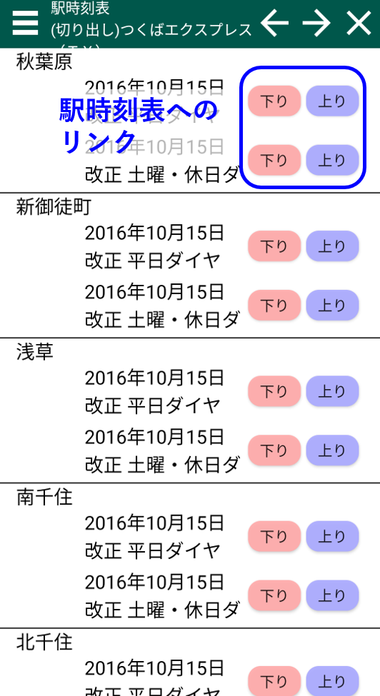
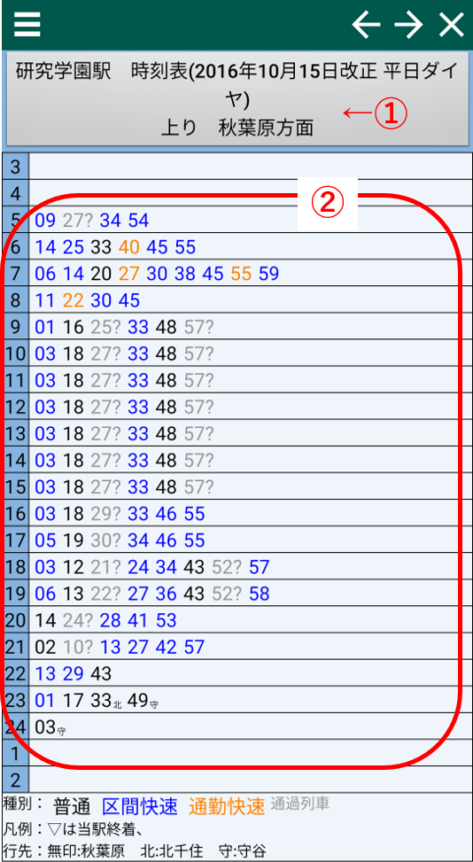

駅時刻表目次
 各駅の時刻表へのリンクが配置されています。 リンクをタップすると駅時刻表が開きます。駅時刻表
①：駅タイトル
タップすることで、上り時刻表と下り時刻表を切り替えたり、他駅の時刻表に移動することができます。②：列車時刻
当駅を通過する各列車の時刻が表示されています。デフォルトでは通過列車は表示されませんが、駅時刻表 通過列車の表示 にチェックを入れると通過列車も表示されるようになります。 通過列車は全てグレーの文字で表示されます。 また、当駅で通過時刻が定義されていない場合は、推定された時刻(末尾に?がつく)を用いて表示を行います。
各列車をタップすると路線時刻表の該当部分に移動します。